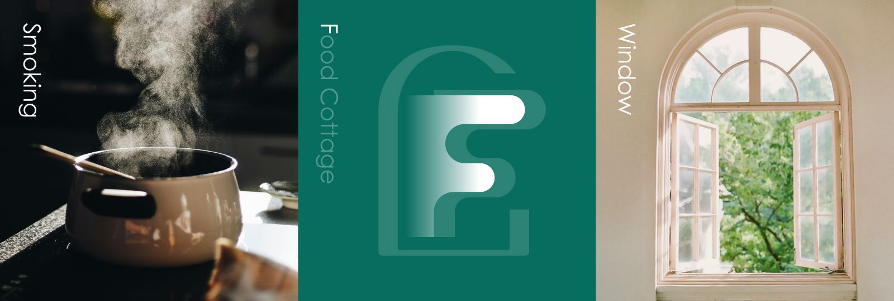
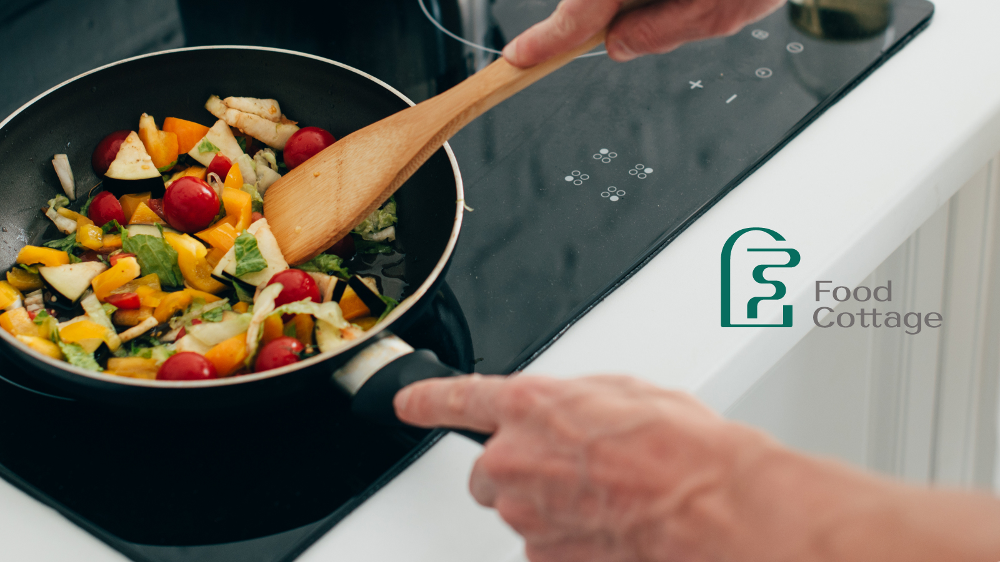
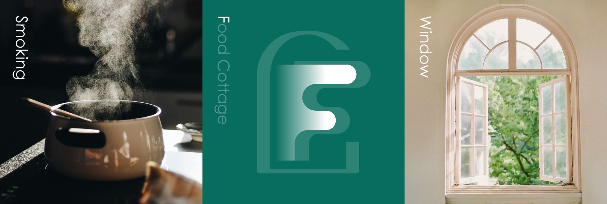
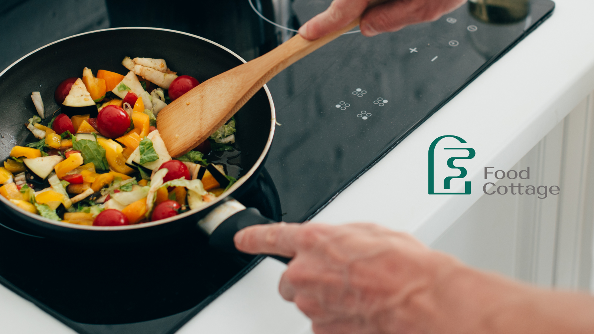
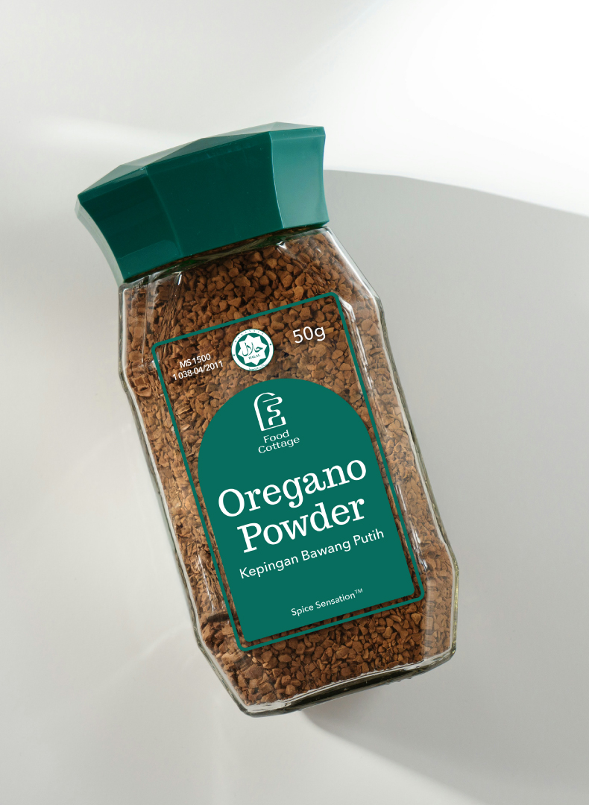

Food Cottage
Branding : Brand Identity
Food Cottage是來自馬來西亞的香料品牌，其品牌願景為期待每一位熱愛烹飪的人，不論來自哪種文化或飲食習慣，都能在這裡找到合適的香料。就像走進一間香氣四溢的食物小屋，琳瑯滿目的選擇，為料理添上靈魂。
LOGO取材自「食物小屋」的意象，將烹飪時從窗戶飄出的香氣化為線條，巧妙融合品牌字首「F」。這股煙霧象徵料理正在發生，也像是一種邀請——聞香而來，走進這間溫暖小屋，一探究竟。窗戶的形象進一步強調「屋內外的連結」：香氣從窗中飄出，故事從這裡展開。在延伸設計中，延續此概念加入不同造型的幾何窗戶，象徵香料的多樣性與文化交融。每扇窗，都是一種風味的起點，也是一戶人家的烹飪記憶。
色彩以深綠為主，象徵香料的自然純粹與品牌對健康的重視，搭配卡其與白色營造溫潤親切的印象。橘、黃、藍作為點綴色，如同料理中的香料提味，為品牌增添層次與風味。
LOGO取材自「食物小屋」的意象，將烹飪時從窗戶飄出的香氣化為線條，巧妙融合品牌字首「F」。這股煙霧象徵料理正在發生，也像是一種邀請——聞香而來，走進這間溫暖小屋，一探究竟。窗戶的形象進一步強調「屋內外的連結」：香氣從窗中飄出，故事從這裡展開。在延伸設計中，延續此概念加入不同造型的幾何窗戶，象徵香料的多樣性與文化交融。每扇窗，都是一種風味的起點，也是一戶人家的烹飪記憶。
色彩以深綠為主，象徵香料的自然純粹與品牌對健康的重視，搭配卡其與白色營造溫潤親切的印象。橘、黃、藍作為點綴色，如同料理中的香料提味，為品牌增添層次與風味。
My Role
Brand Design
Visual Design
Brand Design
Visual Design
 



